操作
算法
描述
插图
示例使用
顶上
Ab B (1-a)
显示图像 B 的形状，其中覆盖图像重叠的 B。
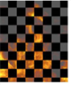
平均
(A) B)/2
两幅图像的平均值。结果比原始图像暗。
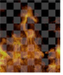
颜色烧伤
使 B 变暗到 A
图像 B 根据 A 的亮度变暗。
 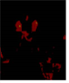
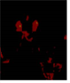
颜色-道奇
照亮 B 走向 A
图像 B 根据 A 的亮度变得更亮。
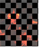
联合结束
A B (1-a/b),
如果 A> b
类似于 over 操作，除了如果一个像素被 a 和 B 部分覆盖，联合操作假设 A 完全隐藏 B。例如，两个多边形，其中 A 和 B 共享一些边，但 A 完全重叠 B。正常在这里产生一个稍微透明的接缝。
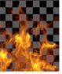
复制
一个
仅显示图像 A。
如果您还设置了 混合 或 面具 控制，以便仍然可以看到一些 B。
差异
Abs (A-B)
像素有多少不同。也可从 合并 > 合并 > 缺席 .
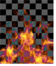
用于比较两个非常相似的图像。此模式也可以用作差异键控器。
不相交的
A B (1-a)/b,
A B 如果 b <1
与 over 操作类似，除了如果一个像素被 a 和 b 部分覆盖，不相交 over 假设两个对象不重叠。例如，两个多边形接触并共享一个边。正常在这里产生一个稍微透明的接缝。
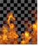
如果要将元素 a 合并到元素 b 上，并且元素 a 已经保留了元素 b，这可能会很有用。例如，您可能有一个 CG 角色，其头发、皮肤和衣服分别渲染，以便每个对象都有其他对象保留在渲染之外。
在这种情况下，使用 over 操作会在 comped 对象周围产生暗线。这是因为 over 对背景图像进行了保留，这意味着背景被保留了两次。
划分
A/B,
如果 A <0 和 B <0，则为 0
将值分开，但阻止两个负值成为正数。
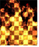
这与任何摄影操作都不匹配，但可以用来撤销乘法。
排除
B-2AB
一种更具摄影形式的差异。
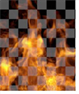
从
B-A
图像 A 从 B 中减去。
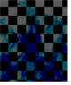
几何
2AB/(A B)
平均两幅图像的另一种方法。
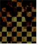
硬光
如果 A <0.5,
屏幕如果超过 0.5
图像 B 被图像 a 形状的非常明亮和锐利的光线照亮。
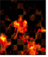
Hypot
Sqrt (A * A B * B)
类似于加号和屏幕操作。结果不像 plus 那么亮，但比屏幕亮。
Hypot 与高于 1 的值一起工作。
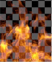
这对于添加反射非常有用，可以作为屏幕的替代选择。
在
Ab
仅显示图像 A 与 B 的 alpha 重叠的区域。也可从 合并 > 合并 > 在 .
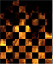
用于组合遮罩。
面具
Ba
这与 in 操作相反。仅显示与 A 的 alpha 重叠的图像 B 的区域。
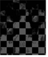
哑光
Aa B (1-a)
预乘超过。在此操作中使用未预乘图像。也可从 合并 > 合并 > 哑光 .
 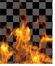
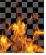
最大
Max (A，B)
获取两个图像的最大值。也可从 合并 > 合并 > 最大 .
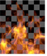
这是一个很好的方法来结合遮罩和有用的方面，如明亮的头发细节通过。
Min
Min (A，B)
取两个图像的最小值。也可从 合并 > 合并 > Min .
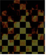
减去
A-B
从 A 中减去图像 B。
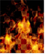
乘
AB，如果 A <0 和 B <0
将值相乘，但阻止两个负值成为正数。也可从 合并 > 合并 > 乘 .
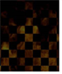
用于将 A 的较暗值与 B 的图像合成，例如，在白色背景下拍摄深灰色烟雾。
这对于向带有 F_Regrain 的图像中添加纹理板也很有用。
出去
A (1-b)
仅显示图像 A 中与 B 的 alpha 不重叠的区域。也可从 合并 > 合并 > 出去 .
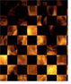
用于组合遮罩。
结束
A B (1-a)
这是默认操作。根据图像 A 的 alpha 对图像 A 和 B 进行分层。
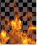
这是最常用的操作。在背景板上分层前景元素时使用。
覆盖
乘以如果 B <0.5,
屏幕如果 B> 0.5
图像 A 照亮图像 B。
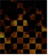
加
A B
图像 A 和 B 的总和。也可以从 合并 > 合并 > 加 。请注意，plus 算法可能会导致像素值高于 1.0。
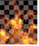
有用的合成激光束，但你最好不要使用这个组合遮罩。
屏幕
A 或 B ≤ 1？A B-AB: max (A，B)
如果 A 或 B 小于或等于 1，则屏幕使用最大示例，类似于 Plus。也可从 合并 > 合并 > 屏幕 .

这对于合并遮罩和添加激光束非常有用。
软光
B (2A (B (1-AB) 如果 AB <1，2AB，否则
图像 B 被点亮。不像强光操作那样极端。
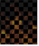
钢网
B (1-a)
这是 out 操作的反面。仅显示图像 B 中与 A 的 alpha 不重叠的区域。
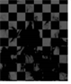
下
A (1-b) B
这与过度操作相反。根据图像 B 的遮罩在 A 上分层图像 B。
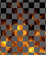
Xor
A (1-b) B (1-a)
显示图像不重叠的图像 A 和 B。
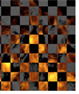